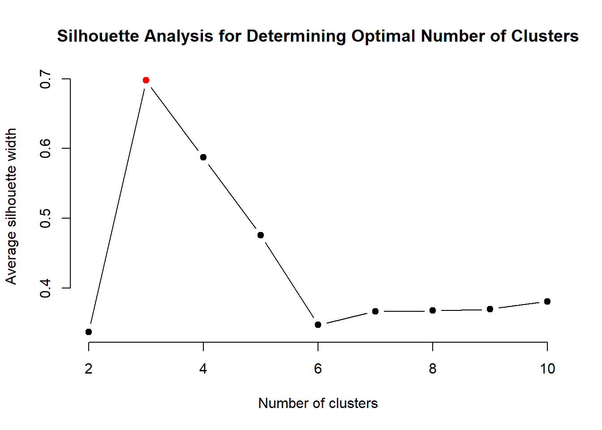

pacman::p_load(tidyverse, knitr, ggridges, ggdist, colorspace, ggrepel, ggthemes, hrbrthemes, patchwork, lubridate, ggstatsplot, plotly, rjson, visNetwork, BiocManager, igraph, cluster, factoextra, stats, hms, caret) Take-home Ex3
Introduction
This take-home exercise is centred on the learning patterns of learners in a programming course conducted by NorthClass Education Training Institute. The primary focus is to support the institution’s endeavor to analyze and visualise learners’ knowledge mastery levels, monitor the patterns and trends in their learning behaviors, identify and dissect potential factors that contribute to learning difficulties, and hence to derive feasible suggestions to adjust teaching strategies and course design.
Objective & Task Requirements
To address the above, the key objective of this exercise is:
- To analyse and provide a visual representation of the relationship between learning modes and knowledge acquisition (learners’ ability to absorb, integrate, and apply knowledge)
This would entail the following sub-task requirements:
- To visualise and uncover the various learning modes, and
- To visualise and uncover the patterns in distribution in learner’s performance in each various learning modes, and
- To visualise and determine the statistical differences and correlations that learning mode may have with learners’ performance
Getting Started
Loading Required R Package Libraries
The code chunk below loads the following libraries:
tidyverse: an amalgamation of libraries for data handling (including ggplot2, dplyr, tidyr, readr, tibble)knitr: for creating dynamic html tables/reportsggridges: extension of ggplot2 designed for plotting ridgeline plotsggdist: extension of ggplot2 designed for visualising distribution and uncertainty,colorspace: provides a broad toolbox for selecting individual colors or color palettes, manipulating these colors, and employing them in various kinds of visualisations.ggrepel: provides geoms for ggplot2 to repel overlapping text labels.ggthemes: provides additional themes, geoms, and scales for ggplot packagehrbrthemes: provides typography-centric themes and theme components for ggplot packagepatchwork: preparing composite figure created using ggplot packagelubridate: for wrangling of date-time dataggstatplot: provides alternative statistical inference methods by default as an extension of the ggplot2 packageplotly: R library for plotting interactive statistical graphs.rjson: Methods for Cluster analysis.visNetwork: Extract and Visualize the Results of Multivariate Data Analyses.BiocManager: Extension ofggplot2by adding several functions to reduce the complexity of combining geometric objects with transformed data.igraph: Extension ofggplot2by adding several functions to reduce the complexity of combining geometric objects with transformed data.- cluster
- factoextra
- stats
- hms
- caret
Importing the Data
The data for this exercise was collected from a select group of learners over a specified set of programming tasks over a particular learning period, which was compiled in 3 datasets described below. It is accompanied by a separate document providing a more detailed description of the data and variables.
- Dataset 1: Student Information - This comprises of 5 Cols, 1364 Rows, providing individualised demographic variables of the learners (a.k.a students) within the scope this project
- Dataset 2: Learning Subject Title Information - This comprises of 5 Cols, 44 Rows, providing variables of the questions from the programming tasks which are collated in the scope of this project
- Dataset 3: Class Submission Records - This comprises of 15 datasets, each with 10 Cols and various number of rows, providing supposedly the participating learners’ answering variables to the questions collated in the scope of this project
The code chunk below imports the dataset into R environment by using read_csv() function of readr, which is part of the tidyverse package.
df_StudentInfo <- read_csv("data/Data_StudentInfo.csv")df_TitleInfo <- read_csv("data/Data_TitleInfo.csv")csv_file_list <- dir('data/Data_SubmitRecord')
csv_file_list <- paste0("./data/Data_SubmitRecord/",csv_file_list)
df_StudentRecord <- NULL
for (file in csv_file_list) { # for every file...
file <- read_csv(file)
df_StudentRecord <- rbind(df_StudentRecord, file) # then stick together by rows
}Data Preparation
Data Cleaning
Before data transformation, the cleanliness of the data set is first ascertained by checking for missing and duplicate data.
Missing Data
colSums() and is.NA() functions are used to search for missing values as a whole for the 3 data sets in the code chunks as follows.
#Find the number of missing values for each col
colSums(is.na(df_StudentInfo)) index student_ID sex age major
0 0 0 0 0 #Find the number of missing values for each col
colSums(is.na(df_TitleInfo)) index title_ID score knowledge sub_knowledge
0 0 0 0 0 #Find the number of missing values for each col
colSums(is.na(df_StudentRecord)) index class time state score title_ID
0 0 0 0 0 0
method memory timeconsume student_ID
0 0 0 0 From the outputs above, none of the variables contain missing values.
Check for duplicate rows
Using duplicated(), duplicate rows in each of the 3 data sets are identified and extracted in the following code chunks.
df_StudentInfo[duplicated(df_StudentInfo), ]# A tibble: 0 × 5
# ℹ 5 variables: index <dbl>, student_ID <chr>, sex <chr>, age <dbl>,
# major <chr>df_TitleInfo[duplicated(df_TitleInfo), ]# A tibble: 0 × 5
# ℹ 5 variables: index <dbl>, title_ID <chr>, score <dbl>, knowledge <chr>,
# sub_knowledge <chr>df_StudentRecord[duplicated(df_StudentRecord), ]# A tibble: 0 × 10
# ℹ 10 variables: index <dbl>, class <chr>, time <dbl>, state <chr>,
# score <dbl>, title_ID <chr>, method <chr>, memory <dbl>, timeconsume <chr>,
# student_ID <chr>From the outputs above, there were no duplicate rows found.
Data Wrangling for Inconsistencies
To get a better understanding of the variables in the original dataset, the glimpse() function is used in the following code chunks.
glimpse(df_StudentInfo)Rows: 1,364
Columns: 5
$ index <dbl> 1, 2, 3, 4, 5, 6, 7, 8, 9, 10, 11, 12, 13, 14, 15, 16, 17, …
$ student_ID <chr> "8b6d1125760bd3939b6e", "63eef37311aaac915a45", "5d89810b20…
$ sex <chr> "female", "female", "female", "female", "male", "male", "ma…
$ age <dbl> 24, 21, 23, 21, 22, 19, 21, 18, 21, 24, 23, 20, 18, 18, 23,…
$ major <chr> "J23517", "J87654", "J87654", "J78901", "J40192", "J57489",…glimpse(df_TitleInfo)Rows: 44
Columns: 5
$ index <dbl> 1, 2, 3, 4, 5, 6, 7, 8, 9, 10, 11, 12, 13, 14, 15, 16, 1…
$ title_ID <chr> "Question_VgKw8PjY1FR6cm2QI9XW", "Question_q7OpB2zCMmW9w…
$ score <dbl> 1, 1, 1, 1, 1, 1, 2, 2, 2, 2, 2, 3, 3, 3, 3, 3, 3, 3, 3,…
$ knowledge <chr> "r8S3g", "r8S3g", "r8S3g", "r8S3g", "r8S3g", "r8S3g", "t…
$ sub_knowledge <chr> "r8S3g_l0p5viby", "r8S3g_n0m9rsw4", "r8S3g_l0p5viby", "r…glimpse(df_StudentRecord)Rows: 232,818
Columns: 10
$ index <dbl> 0, 1, 2, 3, 4, 5, 6, 7, 8, 9, 10, 11, 12, 13, 14, 15, 16, …
$ class <chr> "Class1", "Class1", "Class1", "Class1", "Class1", "Class1"…
$ time <dbl> 1704209872, 1704209852, 1704209838, 1704208923, 1704208359…
$ state <chr> "Absolutely_Correct", "Absolutely_Correct", "Absolutely_Co…
$ score <dbl> 3, 3, 3, 3, 4, 0, 3, 3, 3, 3, 3, 3, 3, 1, 3, 1, 1, 4, 0, 0…
$ title_ID <chr> "Question_bumGRTJ0c8p4v5D6eHZa", "Question_62XbhBvJ8NUSnAp…
$ method <chr> "Method_Cj9Ya2R7fZd6xs1q5mNQ", "Method_gj1NLb4Jn7URf9K2kQP…
$ memory <dbl> 320, 356, 196, 308, 320, 0, 308, 312, 312, 328, 512, 324, …
$ timeconsume <chr> "3", "3", "2", "2", "3", "5", "2", "2", "3", "2", "3", "2"…
$ student_ID <chr> "8b6d1125760bd3939b6e", "8b6d1125760bd3939b6e", "8b6d11257…Identifying Other Unexpected Duplicate Values
Considering intuitively unique values for certain variables or dependent variables, other forms of duplicates are also identified and cleaned where relevant.
- Duplicate student_ID in StudentInfo
# Find the duplicated student_IDs
duplicates <- df_StudentInfo[duplicated(df_StudentInfo$student_ID) | duplicated(df_StudentInfo$student_ID, fromLast = TRUE), ]
# Display the rows with duplicate student_IDs
duplicates# A tibble: 0 × 5
# ℹ 5 variables: index <dbl>, student_ID <chr>, sex <chr>, age <dbl>,
# major <chr>From the output above, no duplicates found.
- Duplicate title_ID (aka questions) in TitleInfo
# Find the duplicated title_IDs
duplicates <- df_TitleInfo[duplicated(df_TitleInfo$title_ID) | duplicated(df_TitleInfo$title_ID, fromLast = TRUE), ]
# Display the rows with duplicate title_IDs
duplicates# A tibble: 12 × 5
index title_ID score knowledge sub_knowledge
<dbl> <chr> <dbl> <chr> <chr>
1 2 Question_q7OpB2zCMmW9wS8uNt3H 1 r8S3g r8S3g_n0m9rsw4
2 3 Question_q7OpB2zCMmW9wS8uNt3H 1 r8S3g r8S3g_l0p5viby
3 21 Question_QRm48lXxzdP7Tn1WgNOf 3 y9W5d y9W5d_c0w4mj5h
4 22 Question_QRm48lXxzdP7Tn1WgNOf 3 m3D1v m3D1v_r1d7fr3l
5 23 Question_pVKXjZn0BkSwYcsa7C31 3 y9W5d y9W5d_c0w4mj5h
6 24 Question_pVKXjZn0BkSwYcsa7C31 3 m3D1v m3D1v_r1d7fr3l
7 26 Question_lU2wvHSZq7m43xiVroBc 3 y9W5d y9W5d_c0w4mj5h
8 27 Question_lU2wvHSZq7m43xiVroBc 3 k4W1c k4W1c_h5r6nux7
9 30 Question_x2Fy7rZ3SwYl9jMQkpOD 3 y9W5d y9W5d_c0w4mj5h
10 31 Question_x2Fy7rZ3SwYl9jMQkpOD 3 s8Y2f s8Y2f_v4x8by9j
11 36 Question_oCjnFLbIs4Uxwek9rBpu 3 g7R2j g7R2j_e0v1yls8
12 37 Question_oCjnFLbIs4Uxwek9rBpu 3 m3D1v m3D1v_r1d7fr3lunique(duplicates$knowledge)[1] "r8S3g" "y9W5d" "m3D1v" "k4W1c" "s8Y2f" "g7R2j"unique(duplicates$sub_knowledge)[1] "r8S3g_n0m9rsw4" "r8S3g_l0p5viby" "y9W5d_c0w4mj5h" "m3D1v_r1d7fr3l"
[5] "k4W1c_h5r6nux7" "s8Y2f_v4x8by9j" "g7R2j_e0v1yls8"From the outputs above, some questions (title_ID) belong to up to 2 knowledge areas or 2 sub-knowledge areas, where the scores for the former are consistently 3, and for the latter, 1. This overlap in title_ID affects 6 title_IDs, spreads across 6 knowledge areas and 7 sub-knowledge areas.
The unique values for knowledge and sub-knowledge areas are obtained in the following code chunk to better understand the complexity of these 2 variables.
unique(df_TitleInfo$knowledge)[1] "r8S3g" "t5V9e" "m3D1v" "y9W5d" "k4W1c" "s8Y2f" "g7R2j" "b3C9s"unique(df_TitleInfo$sub_knowledge) [1] "r8S3g_l0p5viby" "r8S3g_n0m9rsw4" "t5V9e_e1k6cixp" "m3D1v_r1d7fr3l"
[5] "m3D1v_v3d9is1x" "m3D1v_t0v5ts9h" "y9W5d_c0w4mj5h" "k4W1c_h5r6nux7"
[9] "s8Y2f_v4x8by9j" "y9W5d_p8g6dgtv" "y9W5d_e2j7p95s" "g7R2j_e0v1yls8"
[13] "g7R2j_j1g8gd3v" "b3C9s_l4z6od7y" "b3C9s_j0v1yls8"Based on the output above, there is a total of 8 knowledge areas and 15 sub-knowledge areas. This suggests that majority of the knowledge areas and approximately half of sub-knowledge areas have overlapping title_ID. From the nomenclature, each sub-knowledge area is tagged to only 1 knowledge area.
To meaningfully analyse the relationship between knowledge areas & sub knowledge areas and other variables, additional columns are introduced where the values in these 2 columnns are transposed as column labels with binary values to indicate the tagging of each question to that value. This is done in the following code chunk.
# Transpose the knowledge column to create new columns for each unique value
df_TitleInfo1 <- df_TitleInfo %>%
mutate(knowledge_presence = 1) %>%
spread(key = knowledge, value = knowledge_presence, fill = 0)
# Transpose the sub_knowledge column to create new columns for each unique value
df_TitleInfo2 <- df_TitleInfo %>%
mutate(sub_knowledge_presence = 1) %>%
spread(key = sub_knowledge, value = sub_knowledge_presence, fill = 0)
# Combine the new columns with the original dataframe
df_TitleInfo3 <- df_TitleInfo %>%
distinct(title_ID, .keep_all = TRUE) %>%
left_join(df_TitleInfo1, by = "title_ID") %>%
distinct(title_ID, .keep_all = TRUE) %>%
left_join(df_TitleInfo2, by = "title_ID") %>%
rename(knowledge = knowledge.x,
sub_knowledge = sub_knowledge.x) %>%
select(-index.y,
-score.y,
-knowledge.y,
-sub_knowledge.y,
-index.x,
-score.x,
-index)
# Reassign values to the knowledge & sub_knowledge columns for repeated title_ID rows
df_TitleInfo3 <- df_TitleInfo3 %>%
group_by(title_ID) %>%
mutate(knowledge = paste(unique(df_TitleInfo$knowledge[df_TitleInfo$title_ID == title_ID]), collapse = "_"),
sub_knowledge = paste(unique(df_TitleInfo$sub_knowledge[df_TitleInfo$title_ID == title_ID]), collapse = "_")) %>%
ungroup() %>%
distinct(title_ID, .keep_all = TRUE)
# Group by title_ID
df_TitleInfo_gp <- df_TitleInfo3 %>%
group_by(title_ID) %>%
summarise_all(~first(.))
glimpse(df_TitleInfo_gp)Rows: 38
Columns: 27
$ title_ID <chr> "Question_3MwAFlmNO8EKrpY5zjUd", "Question_3oPyUzDmQtcM…
$ knowledge <chr> "t5V9e", "t5V9e", "m3D1v", "g7R2j", "y9W5d", "m3D1v", "…
$ sub_knowledge <chr> "t5V9e_e1k6cixp", "t5V9e_e1k6cixp", "m3D1v_r1d7fr3l", "…
$ b3C9s <dbl> 0, 0, 0, 0, 0, 0, 0, 0, 0, 0, 0, 1, 0, 0, 0, 0, 0, 0, 0…
$ g7R2j <dbl> 0, 0, 0, 1, 0, 0, 0, 0, 0, 0, 0, 0, 0, 0, 0, 0, 0, 0, 0…
$ k4W1c <dbl> 0, 0, 0, 0, 0, 0, 0, 0, 0, 0, 0, 0, 0, 0, 0, 0, 0, 0, 0…
$ m3D1v <dbl> 0, 0, 1, 0, 0, 1, 1, 0, 0, 0, 0, 0, 1, 0, 1, 0, 0, 1, 0…
$ r8S3g <dbl> 0, 0, 0, 0, 0, 0, 0, 0, 1, 0, 0, 0, 0, 0, 0, 0, 0, 0, 0…
$ s8Y2f <dbl> 0, 0, 0, 0, 0, 0, 0, 0, 0, 0, 0, 0, 0, 0, 0, 0, 0, 0, 0…
$ t5V9e <dbl> 1, 1, 0, 0, 0, 0, 0, 0, 0, 0, 0, 0, 0, 0, 0, 0, 0, 0, 0…
$ y9W5d <dbl> 0, 0, 0, 0, 1, 0, 0, 1, 0, 1, 1, 0, 0, 1, 0, 1, 1, 0, 1…
$ score <dbl> 2, 2, 3, 3, 3, 3, 3, 3, 1, 3, 3, 4, 3, 3, 3, 3, 3, 3, 3…
$ b3C9s_j0v1yls8 <dbl> 0, 0, 0, 0, 0, 0, 0, 0, 0, 0, 0, 1, 0, 0, 0, 0, 0, 0, 0…
$ b3C9s_l4z6od7y <dbl> 0, 0, 0, 0, 0, 0, 0, 0, 0, 0, 0, 0, 0, 0, 0, 0, 0, 0, 0…
$ g7R2j_e0v1yls8 <dbl> 0, 0, 0, 1, 0, 0, 0, 0, 0, 0, 0, 0, 0, 0, 0, 0, 0, 0, 0…
$ g7R2j_j1g8gd3v <dbl> 0, 0, 0, 0, 0, 0, 0, 0, 0, 0, 0, 0, 0, 0, 0, 0, 0, 0, 0…
$ k4W1c_h5r6nux7 <dbl> 0, 0, 0, 0, 0, 0, 0, 0, 0, 0, 0, 0, 0, 0, 0, 0, 0, 0, 0…
$ m3D1v_r1d7fr3l <dbl> 0, 0, 1, 0, 0, 1, 0, 0, 0, 0, 0, 0, 0, 0, 1, 0, 0, 1, 0…
$ m3D1v_t0v5ts9h <dbl> 0, 0, 0, 0, 0, 0, 0, 0, 0, 0, 0, 0, 1, 0, 0, 0, 0, 0, 0…
$ m3D1v_v3d9is1x <dbl> 0, 0, 0, 0, 0, 0, 1, 0, 0, 0, 0, 0, 0, 0, 0, 0, 0, 0, 0…
$ r8S3g_l0p5viby <dbl> 0, 0, 0, 0, 0, 0, 0, 0, 0, 0, 0, 0, 0, 0, 0, 0, 0, 0, 0…
$ r8S3g_n0m9rsw4 <dbl> 0, 0, 0, 0, 0, 0, 0, 0, 1, 0, 0, 0, 0, 0, 0, 0, 0, 0, 0…
$ s8Y2f_v4x8by9j <dbl> 0, 0, 0, 0, 0, 0, 0, 0, 0, 0, 0, 0, 0, 0, 0, 0, 0, 0, 0…
$ t5V9e_e1k6cixp <dbl> 1, 1, 0, 0, 0, 0, 0, 0, 0, 0, 0, 0, 0, 0, 0, 0, 0, 0, 0…
$ y9W5d_c0w4mj5h <dbl> 0, 0, 0, 0, 1, 0, 0, 0, 0, 0, 1, 0, 0, 1, 0, 0, 1, 0, 1…
$ y9W5d_e2j7p95s <dbl> 0, 0, 0, 0, 0, 0, 0, 0, 0, 1, 0, 0, 0, 0, 0, 0, 0, 0, 0…
$ y9W5d_p8g6dgtv <dbl> 0, 0, 0, 0, 0, 0, 0, 1, 0, 0, 0, 0, 0, 0, 0, 1, 0, 0, 0…unique(df_TitleInfo_gp$knowledge) [1] "t5V9e" "m3D1v" "g7R2j" "y9W5d" "r8S3g"
[6] "b3C9s" "y9W5d_m3D1v" "y9W5d_k4W1c" "g7R2j_m3D1v" "y9W5d_s8Y2f"unique(df_TitleInfo_gp$sub_knowledge) [1] "t5V9e_e1k6cixp" "m3D1v_r1d7fr3l"
[3] "g7R2j_e0v1yls8" "y9W5d_c0w4mj5h"
[5] "m3D1v_v3d9is1x" "y9W5d_p8g6dgtv"
[7] "r8S3g_n0m9rsw4" "y9W5d_e2j7p95s"
[9] "b3C9s_j0v1yls8" "m3D1v_t0v5ts9h"
[11] "y9W5d_c0w4mj5h_m3D1v_r1d7fr3l" "r8S3g_l0p5viby"
[13] "g7R2j_j1g8gd3v" "b3C9s_l4z6od7y"
[15] "y9W5d_c0w4mj5h_k4W1c_h5r6nux7" "g7R2j_e0v1yls8_m3D1v_r1d7fr3l"
[17] "r8S3g_n0m9rsw4_r8S3g_l0p5viby" "y9W5d_c0w4mj5h_s8Y2f_v4x8by9j"- Duplicate class for each Individual Students in StudentRecord
# Identify students with multiple classes
students_multiple_classes <- df_StudentRecord %>%
group_by(student_ID) %>%
summarise(unique_classes = n_distinct(class)) %>%
filter(unique_classes > 1)
students_multiple_classes_entries <- df_StudentRecord %>%
filter(student_ID %in% students_multiple_classes$student_ID) %>%
group_by(student_ID, class) %>%
summarise(count = n()) %>%
arrange(desc(count)) %>%
arrange(desc(student_ID))
# Display the results
print(students_multiple_classes_entries)# A tibble: 12 × 3
# Groups: student_ID [6]
student_ID class count
<chr> <chr> <int>
1 r9m46ndmmmzeeehft96z Class15 140
2 r9m46ndmmmzeeehft96z class 1
3 qz6jjynwbd3szlp0rj04 Class1 136
4 qz6jjynwbd3szlp0rj04 class 1
5 nd9xpohv0s4ttw0o7fts Class8 143
6 nd9xpohv0s4ttw0o7fts class 1
7 lqm8jh0uggps7yd0lx2x Class8 132
8 lqm8jh0uggps7yd0lx2x class 1
9 isa355t9q5rut5fm8aml Class1 142
10 isa355t9q5rut5fm8aml class 1
11 ezdogkk0jqt4nvvvbnxp Class7 125
12 ezdogkk0jqt4nvvvbnxp class 1Based on the output above, it is apparent that the 2nd class for each of the student above is an erroneous value. Hence this inconsistency will be cleaned in the following code chunk
# Step 1: Identify the correct class for each student (the class with the highest frequency)
correct_classes <- df_StudentRecord %>%
filter(student_ID %in% students_multiple_classes$student_ID) %>%
group_by(student_ID, class) %>%
summarise(count = n()) %>%
arrange(desc(count)) %>%
slice(1) %>%
select(student_ID, correct_class = class)
# Step 2: Replace wrong class values
df_StudentRecord <- df_StudentRecord %>%
left_join(correct_classes, by = "student_ID") %>%
mutate(class = ifelse(!is.na(correct_class), correct_class, class)) %>%
select(-correct_class)For completeness, a check is done for existence of other students with class that has no class number in the following code chunk.
MissingClassNo <- df_StudentRecord %>%
filter(class == "class")
MissingClassNo# A tibble: 0 × 10
# ℹ 10 variables: index <dbl>, class <chr>, time <dbl>, state <chr>,
# score <dbl>, title_ID <chr>, method <chr>, memory <dbl>, timeconsume <chr>,
# student_ID <chr>Based on the output above, there are no further students with class without number.
Identifying Other Unexpected and/or Missing Values
- Missing Student_ID and title_ID in StudentRecord are also identified.
missing_students <- anti_join(df_StudentRecord, df_StudentInfo, by = "student_ID")
# Display the missing student IDs
missing_student_ids <- missing_students %>% select(student_ID) %>% distinct()
print(missing_student_ids)# A tibble: 1 × 1
student_ID
<chr>
1 44c7cf3881ae07f7fb3eDmissing_questions <- anti_join(df_StudentRecord, df_TitleInfo, by = "title_ID")
# Display the missing title IDs
missing_questions <- missing_questions %>% select(title_ID) %>% distinct()
print(missing_questions)# A tibble: 0 × 1
# ℹ 1 variable: title_ID <chr>There is 1 missing student between either StudentRecord or StudentInfo, but no missing questions. Since there is partial missing info on this student, it isn’t meaningful to include in this analysis, hence the student_ID will be excluded in the following code chunk.
df_StudentInfo <- df_StudentInfo %>%
filter (student_ID != '44c7cf3881ae07f7fb3eD')
df_StudentRecord <- df_StudentRecord %>%
filter (student_ID != '44c7cf3881ae07f7fb3eD')- Other unexpected values
The unique values for each column is queried to check for unexpected values in the following code chunk, wherein Index, time, class, title_ID and student_ID are excluded since they will be dealt with separately
unique(df_StudentRecord$state) [1] "Absolutely_Correct" "Error1" "Absolutely_Error"
[4] "Error6" "Error4" "Partially_Correct"
[7] "Error2" "Error3" "Error5"
[10] "Error7" "Error8" "Error9"
[13] "�������" unique(df_StudentRecord$score)[1] 3 4 0 1 2unique(df_StudentRecord$method)[1] "Method_Cj9Ya2R7fZd6xs1q5mNQ" "Method_gj1NLb4Jn7URf9K2kQPd"
[3] "Method_5Q4KoXthUuYz3bvrTDFm" "Method_m8vwGkEZc3TSW2xqYUoR"
[5] "Method_BXr9AIsPQhwNvyGdZL57"unique(df_StudentRecord$memory) [1] 320 356 196 308 0 312 328 512 324 188 316 344
[13] 444 192 332 484 360 200 340 184 476 492 180 448
[25] 464 8544 204 496 364 460 508 456 352 480 348 488
[37] 468 400 616 472 384 376 452 336 588 604 440 600
[49] 580 500 640 520 436 368 612 504 736 632 8448 220
[61] 372 208 828 256 568 576 628 756 620 700 212 592
[73] 380 396 432 404 644 564 748 216 264 708 768 304
[85] 420 624 8516 8644 288 8632 8640 8512 408 260 292 608
[97] 8580 636 536 424 596 272 388 300 280 268 176 160
[109] 296 416 240 284 248 172 8388 832 4164 4284 428 168
[121] 572 164 276 528 392 412 8668 8500 8540 8664 8536 8576
[133] 8628 8504 8800 8524 8392 8548 692 952 8508 8648 9664 9536
[145] 9564 49852 59616 1332 948 824 724 2876 3024 24668 25208 26712
[157] 23968 732 25248 22740 712 8520 720 18264 224 4984 8696 20272
[169] 19576 516 8976 9028 9532 544 584 552 524 5624 29688 688
[181] 30940 44020 740 556 51376 14656 65536 680 30440 30284 23128 28112
[193] 760 15060 25660 23356 31796 804 24768 24232 12792 14720 26172 29020
[205] 32992 28492 10568 8460 8404 908 652 540 8620 34268 11348 11640
[217] 13124 532 12608 15028 1400 32544 39612 27272 28852 29248 8452 8616
[229] 8480 8528 560 13576 8436 548 2012 24896 232 21728 21148 4424
[241] 7640 43512 39912 19936 12580 2412 2436 24224 4296 4332 6392 25912
[253] 21332 20128 668 35948 2360 8612 8384 5560 26548 25532 13112 15288
[265] 13992 49336 53216 15040 13780 8496 8424 37184 8476 8400 8408 30656
[277] 8156 8140 8064 8136 11236 5616 8160 4192 23116 19784 22908 21176
[289] 18276 20708 19868 16348 18716 17208 19588 14824 20780 20204 24932 21084
[301] 24992 21884 18764 26624 24368 13240 22988 3740 43532 26084 26320 13340
[313] 11372 46460 49464 13356 8144 8564 1720 13892 14488 10580 23576 8396
[325] 15212 15340 872 25648 25920 27028 24356 23544 7416 6560 4852 8556
[337] 32088 32716 44216 4292 228 33212 33736 27228 27288 11764 10540 11560
[349] 10456 11384 10708 32932 25940 17800 16764 46908 30512 9368 9472 19156
[361] 2348 36136 8132 4708 39048 21152 30632 27200 656 252 47096 8552
[373] 8464 14040 36984 2384 1792 6084 5844 2456 2440 26452 27364 648
[385] 244 23168 24324 8420 41460 40568 34316 896 1472 7156 23740 6444
[397] 6972 6200 6060 7488 6700 6580 5184 4948 5052 5820 6120 5404
[409] 5028 5180 5100 5068 5020 5204 5976 5176 5048 5884 5824 5828
[421] 5060 5072 5056 6076 6328 5076 8492 8428 236 7340 6668 7492
[433] 8412 8652 17176 6852 6616 6032 45288 50140 40348 16848 21820 20856
[445] 26296 28128 31560 17272 17656 37548 34476 38428 30456 41624 34224 18148
[457] 20816 128 808 156 844 728 716 696 836 676 4324 860
[469] 1980 8812 660 8636 684 8756 704 8532 8572 1920 1972 2332
[481] 2172 2296 2280 13908 63088 15432 15680 15624 15824 15956 15724 15292
[493] 8796 1880 1996 1992 11256 11268 11264 29240 29144 28752 27988 6068
[505] 1180 28536 11032 39216 35632 28600 2104 8656 36028 38432 12456 30164
[517] 1268 1328 1316 1240 50220 4540 35888 1976 4440 14336 14384 45680
[529] 39080 28484 39104 53732 8680 8692 8660 14136 4564 4480 28848 29112
[541] 18856 8792 8600 8592 41404 37052 36532 37804 33084 37368 30820 50620
[553] 26248 22264 26616 25900 752 47040 14644 40636 43128 33568 36248 33088
[565] 28140 28084 30532 30572 48376 47640 17400 20288 28724 20216 12664 12204
[577] 11960 27188 15700 15664 4580 4584 28036 28732 34004 33508 31808 1528
[589] 1716 13752 9592 9520 9784 9208 8828 28716 27536 28584 1704 1620
[601] 13096 14132 14584 57528 45500 7096 2168 2236 12984 20412 31172 29296
[613] 54356 54336 47548 41664 41812 13624 1336 1348 13496 55524 1352 1356
[625] 42052 744 996 984 940 1016 29012 28080 26036 7344 7232 7476
[637] 7828 13956 43452 1456 1324 1364 43196 27964 10812 972 1340 4692
[649] 27248 44592 44860 46576 20464 52656 52996 48964 49516 6904 6592 6584
[661] 8672 46852 40364 14500 14712 17740 17620 52584 8488 36488 44204 44500
[673] 42300 45228 17980 37460 28240 28988 53288 58424 9540 9524 6936 6204
[685] 54596 28604 29528 42804 12856 13776 15720 4156 12472 8704 8688 29300
[697] 18612 12976 32376 8776 13548 26456 1884 1752 764 4172 53316 52160
[709] 47036 45632 53396 51320 12468 11496 53604unique(df_StudentRecord$timeconsume) [1] "3" "2" "5" "4" "1" "9" "6" "--" "18" "61" "7" "59"
[13] "10" "8" "12" "13" "16" "15" "183" "68" "314" "64" "60" "11"
[25] "96" "94" "58" "67" "54" "17" "122" "19" "126" "14" "91" "50"
[37] "21" "40" "23" "20" "80" "31" "118" "400" "63" "25" "27" "29"
[49] "24" "26" "62" "152" "39" "22" "117" "30" "28" "48" "309" "331"
[61] "36" "65" "47" "46" "45" "52" "32" "42" "34" "38" "187" "37"
[73] "190" "163" "41" "53" "51" "307" "201" "184" "44" "43" "109" "33"
[85] "66" "326" "73" "49" "77" "82" "70" "71" "81" "35" "57" "75"
[97] "394" "385" "164" "78" "220" "217" "115" "86" "72" "88" "76" "134"
[109] "55" "84" "56" "106" "166" "124" "373" "289" "-" "135" "103" "114"
[121] "258" "254" "85" "69" "90" "132" "173" "272" "113" "116" "215" "123"
[133] "246" "146" "89" "245" "285" "205" "162" "165" "266" "172" "143" "377"
[145] "160" "159" "182" "74" "264" "153" "83" "286" "275" "280" "274" "269"
[157] "288" "271" "136" "276" "277" "356" "79" "147" "350" "315" "321" "302"unique(df_StudentInfo$sex)[1] "female" "male" unique(df_StudentInfo$age)[1] 24 21 23 22 19 18 20unique(df_StudentInfo$major)[1] "J23517" "J87654" "J78901" "J40192" "J57489"unique(df_TitleInfo$score)[1] 1 2 3 4unique(df_TitleInfo$knowledge)[1] "r8S3g" "t5V9e" "m3D1v" "y9W5d" "k4W1c" "s8Y2f" "g7R2j" "b3C9s"unique(df_TitleInfo$sub_knowledge) [1] "r8S3g_l0p5viby" "r8S3g_n0m9rsw4" "t5V9e_e1k6cixp" "m3D1v_r1d7fr3l"
[5] "m3D1v_v3d9is1x" "m3D1v_t0v5ts9h" "y9W5d_c0w4mj5h" "k4W1c_h5r6nux7"
[9] "s8Y2f_v4x8by9j" "y9W5d_p8g6dgtv" "y9W5d_e2j7p95s" "g7R2j_e0v1yls8"
[13] "g7R2j_j1g8gd3v" "b3C9s_l4z6od7y" "b3C9s_j0v1yls8"From the outputs above, there is an unexpected value for state and timeconsume in StudentRecord.
Starting with state, the rows with unexpected value(s) are queried in the following code chunk to better understand the number of affected rows.
Outlier_state <- df_StudentRecord %>%
filter (state == '�������')
Outlier_state# A tibble: 6 × 10
index class time state score title_ID method memory timeconsume student_ID
<dbl> <chr> <dbl> <chr> <dbl> <chr> <chr> <dbl> <chr> <chr>
1 6344 Class10 1.70e9 ����… 0 Questio… Metho… 65536 309 c681117f7…
2 6346 Class10 1.70e9 ����… 0 Questio… Metho… 65536 331 c681117f7…
3 6347 Class10 1.70e9 ����… 0 Questio… Metho… 65536 331 c681117f7…
4 10138 Class8 1.69e9 ����… 0 Questio… Metho… 65536 356 1883af270…
5 16420 Class8 1.69e9 ����… 0 Questio… Metho… 65536 356 hpb03ydul…
6 16458 Class8 1.69e9 ����… 0 Questio… Metho… 65536 356 ljylby8in…From the output above, there are only 6 rows that are affected. Further cross-validation with the data description document found that there should only be 12 unique values for this variable, and including this outlier state value will give 13. Hence this is likely a wrong entry, and so it will be excluded from the analysis in the following code chunk.
df_StudentRecord <- df_StudentRecord %>%
filter (state != '�������')For timeconsume, the rows with unexpected value(s) are queried in the following code chunk to better understand the number of affected rows.
Outlier_timeconsume <- df_StudentRecord %>%
filter (timeconsume %in% c('-', '--'))
Outlier_timeconsume# A tibble: 2,612 × 10
index class time state score title_ID method memory timeconsume student_ID
<dbl> <chr> <dbl> <chr> <dbl> <chr> <chr> <dbl> <chr> <chr>
1 191 Class1 1.70e9 Erro… 0 Questio… Metho… 0 -- 9417c1b4c…
2 321 Class1 1.70e9 Erro… 0 Questio… Metho… 0 -- 8b1fbc973…
3 322 Class1 1.70e9 Erro… 0 Questio… Metho… 0 -- 8b1fbc973…
4 366 Class1 1.70e9 Erro… 0 Questio… Metho… 0 -- 9ea29e4a7…
5 396 Class1 1.70e9 Erro… 0 Questio… Metho… 0 -- 9ea29e4a7…
6 397 Class1 1.70e9 Erro… 0 Questio… Metho… 0 -- 9ea29e4a7…
7 422 Class1 1.70e9 Erro… 0 Questio… Metho… 0 -- f06c3ddb1…
8 423 Class1 1.70e9 Erro… 0 Questio… Metho… 0 -- f06c3ddb1…
9 424 Class1 1.70e9 Erro… 0 Questio… Metho… 0 -- f06c3ddb1…
10 425 Class1 1.70e9 Erro… 0 Questio… Metho… 0 -- f06c3ddb1…
# ℹ 2,602 more rowsBased on the output, there is a significant number of 2,612 rows with the unexpected value. Hence these rows will be kept in the analysis and replaced with 0 (since there is no existing values of 0 too), however subsequent analysis in this exercise involving the timeconsume variable will treat these values as missing values. This is done in the following code chunk
df_StudentRecord <- df_StudentRecord %>%
mutate(timeconsume = ifelse(timeconsume %in% c("-", "--"), 0, timeconsume))
unique(df_StudentRecord$timeconsume) [1] "3" "2" "5" "4" "1" "9" "6" "0" "18" "61" "7" "59"
[13] "10" "8" "12" "13" "16" "15" "183" "68" "314" "64" "60" "11"
[25] "96" "94" "58" "67" "54" "17" "122" "19" "126" "14" "91" "50"
[37] "21" "40" "23" "20" "80" "31" "118" "400" "63" "25" "27" "29"
[49] "24" "26" "62" "152" "39" "22" "117" "30" "28" "48" "36" "65"
[61] "47" "46" "45" "52" "32" "42" "34" "38" "187" "37" "190" "163"
[73] "41" "53" "51" "307" "201" "184" "44" "43" "109" "33" "66" "326"
[85] "73" "49" "77" "82" "70" "71" "81" "35" "57" "75" "394" "385"
[97] "164" "78" "220" "217" "115" "86" "72" "88" "76" "134" "55" "84"
[109] "56" "106" "166" "124" "373" "289" "135" "103" "114" "258" "254" "85"
[121] "69" "90" "132" "173" "272" "113" "116" "215" "123" "246" "146" "89"
[133] "245" "285" "205" "162" "165" "266" "172" "143" "377" "160" "159" "182"
[145] "74" "264" "153" "83" "286" "275" "331" "280" "274" "269" "288" "271"
[157] "136" "276" "277" "79" "147" "350" "315" "321" "302"Removing Index Col
Each data set contains an index column, which is possibly to keep track of the original order and the total number of rows. This is no longer required and relevant in the analysis, hence it will be excluded.
#remove index column
df_StudentRecord <- df_StudentRecord %>% select(-1)
df_TitleInfo <- df_TitleInfo %>% select(-1)
df_StudentInfo <- df_StudentInfo %>% select(-1)Correcting Data Types
Based on the glimpse() function, the time variable of the StudentRecord is currently in numerical format. This will be corrected to date time format with the following steps.
Step 1: From the data description document, the data collection period spans 148 days from 31/8/2023 to 25/1/2024, and the time variable of the StudentRecord in this data set is in seconds. This is compared against the min and max values of the time variable converted to days and deducted from the given start and end date of the collection period given, in the following code chunk.
# Get the min and max values of the time column
min_time <- min(df_StudentRecord$time, na.rm = TRUE)
max_time <- max(df_StudentRecord$time, na.rm = TRUE)
# Display the min & max values
date_adjustment1 <- as.numeric(as.Date("2023-08-31")) - (min_time / 24 / 60 / 60)
date_adjustment2 <- as.numeric(as.Date("2024-01-25")) - (max_time / 24 / 60 / 60)
date_adjustmentavg <- as.Date((date_adjustment1 + date_adjustment2)/2, origin = "1970-01-01")
date_adjustmentavg[1] "1969-12-31"Step 2: Apply date_adjustmentavg to the time variable to amend the data type to date time format in the folloiwing code chunk
# Convert time from timestamp to POSIXct
df_StudentRecord$time_change <- as.POSIXct(df_StudentRecord$time, origin=date_adjustmentavg, tz="UTC")
glimpse(df_StudentRecord)Rows: 232,811
Columns: 10
$ class <chr> "Class1", "Class1", "Class1", "Class1", "Class1", "Class1"…
$ time <dbl> 1704209872, 1704209852, 1704209838, 1704208923, 1704208359…
$ state <chr> "Absolutely_Correct", "Absolutely_Correct", "Absolutely_Co…
$ score <dbl> 3, 3, 3, 3, 4, 0, 3, 3, 3, 3, 3, 3, 3, 1, 3, 1, 1, 4, 0, 0…
$ title_ID <chr> "Question_bumGRTJ0c8p4v5D6eHZa", "Question_62XbhBvJ8NUSnAp…
$ method <chr> "Method_Cj9Ya2R7fZd6xs1q5mNQ", "Method_gj1NLb4Jn7URf9K2kQP…
$ memory <dbl> 320, 356, 196, 308, 320, 0, 308, 312, 312, 328, 512, 324, …
$ timeconsume <chr> "3", "3", "2", "2", "3", "5", "2", "2", "3", "2", "3", "2"…
$ student_ID <chr> "8b6d1125760bd3939b6e", "8b6d1125760bd3939b6e", "8b6d11257…
$ time_change <dttm> 2024-01-02 08:45:17, 2024-01-02 08:44:57, 2024-01-02 08:4…Further, additional timeconsume will be converted to numeric, wherein the ‘-’ and ‘–’ values found earlier had taken the value of 0 and will be treated as missing values in subsequent analysis.
df_StudentRecord <- df_StudentRecord %>%
mutate(timeconsume = as.numeric(timeconsume))
glimpse(df_StudentRecord)Rows: 232,811
Columns: 10
$ class <chr> "Class1", "Class1", "Class1", "Class1", "Class1", "Class1"…
$ time <dbl> 1704209872, 1704209852, 1704209838, 1704208923, 1704208359…
$ state <chr> "Absolutely_Correct", "Absolutely_Correct", "Absolutely_Co…
$ score <dbl> 3, 3, 3, 3, 4, 0, 3, 3, 3, 3, 3, 3, 3, 1, 3, 1, 1, 4, 0, 0…
$ title_ID <chr> "Question_bumGRTJ0c8p4v5D6eHZa", "Question_62XbhBvJ8NUSnAp…
$ method <chr> "Method_Cj9Ya2R7fZd6xs1q5mNQ", "Method_gj1NLb4Jn7URf9K2kQP…
$ memory <dbl> 320, 356, 196, 308, 320, 0, 308, 312, 312, 328, 512, 324, …
$ timeconsume <dbl> 3, 3, 2, 2, 3, 5, 2, 2, 3, 2, 3, 2, 2, 3, 3, 3, 2, 3, 3, 5…
$ student_ID <chr> "8b6d1125760bd3939b6e", "8b6d1125760bd3939b6e", "8b6d11257…
$ time_change <dttm> 2024-01-02 08:45:17, 2024-01-02 08:44:57, 2024-01-02 08:4…Create Merged Dataset
To prepare for cross dataset analysis of variables, the 3 data sets are joined on title_id and student_id variables in the following code chunks.
# Merge StudentInfo with SubmitRecord based on student_ID
merged_data <- merge(df_StudentRecord, df_StudentInfo, by = "student_ID")
# Merge TitleInfo with the already merged data based on title_ID
merged_data <- merge(merged_data, df_TitleInfo_gp, by = "title_ID")
merged_data <- merged_data %>%
rename(
actual_score = score.x,
question_score = score.y
)saveRDS(merged_data, "merged_data_df.rds")summary (merged_data) title_ID student_ID class time
Length:232811 Length:232811 Length:232811 Min. :1.693e+09
Class :character Class :character Class :character 1st Qu.:1.697e+09
Mode :character Mode :character Mode :character Median :1.699e+09
Mean :1.699e+09
3rd Qu.:1.701e+09
Max. :1.706e+09
state actual_score method memory
Length:232811 Min. :0.0000 Length:232811 Min. : 0.0
Class :character 1st Qu.:0.0000 Class :character 1st Qu.: 188.0
Mode :character Median :0.0000 Mode :character Median : 324.0
Mean :0.8992 Mean : 345.7
3rd Qu.:2.0000 3rd Qu.: 356.0
Max. :4.0000 Max. :65536.0
timeconsume time_change sex
Min. : 0.000 Min. :2023-08-31 01:53:48.50 Length:232811
1st Qu.: 3.000 1st Qu.:2023-10-08 05:16:53.50 Class :character
Median : 4.000 Median :2023-10-29 04:48:53.50 Mode :character
Mean : 8.991 Mean :2023-10-31 19:22:50.95
3rd Qu.: 5.000 3rd Qu.:2023-11-25 08:34:41.00
Max. :400.000 Max. :2024-01-24 22:06:11.50
age major knowledge sub_knowledge
Min. :18.00 Length:232811 Length:232811 Length:232811
1st Qu.:19.00 Class :character Class :character Class :character
Median :21.00 Mode :character Mode :character Mode :character
Mean :21.06
3rd Qu.:23.00
Max. :24.00
b3C9s g7R2j k4W1c m3D1v
Min. :0.00000 Min. :0.0000 Min. :0 Min. :0.0000
1st Qu.:0.00000 1st Qu.:0.0000 1st Qu.:0 1st Qu.:0.0000
Median :0.00000 Median :0.0000 Median :0 Median :0.0000
Mean :0.06348 Mean :0.1419 Mean :0 Mean :0.2051
3rd Qu.:0.00000 3rd Qu.:0.0000 3rd Qu.:0 3rd Qu.:0.0000
Max. :1.00000 Max. :1.0000 Max. :0 Max. :1.0000
r8S3g s8Y2f t5V9e y9W5d question_score
Min. :0.0000 Min. :0 Min. :0.0000 Min. :0.0000 Min. :1.000
1st Qu.:0.0000 1st Qu.:0 1st Qu.:0.0000 1st Qu.:0.0000 1st Qu.:2.000
Median :0.0000 Median :0 Median :0.0000 Median :0.0000 Median :3.000
Mean :0.1578 Mean :0 Mean :0.1631 Mean :0.2686 Mean :2.549
3rd Qu.:0.0000 3rd Qu.:0 3rd Qu.:0.0000 3rd Qu.:1.0000 3rd Qu.:3.000
Max. :1.0000 Max. :0 Max. :1.0000 Max. :1.0000 Max. :4.000
b3C9s_j0v1yls8 b3C9s_l4z6od7y g7R2j_e0v1yls8 g7R2j_j1g8gd3v
Min. :0.0000 Min. :0.00000 Min. :0.000 Min. :0.00000
1st Qu.:0.0000 1st Qu.:0.00000 1st Qu.:0.000 1st Qu.:0.00000
Median :0.0000 Median :0.00000 Median :0.000 Median :0.00000
Mean :0.0272 Mean :0.03629 Mean :0.116 Mean :0.02595
3rd Qu.:0.0000 3rd Qu.:0.00000 3rd Qu.:0.000 3rd Qu.:0.00000
Max. :1.0000 Max. :1.00000 Max. :1.000 Max. :1.00000
k4W1c_h5r6nux7 m3D1v_r1d7fr3l m3D1v_t0v5ts9h m3D1v_v3d9is1x
Min. :0 Min. :0.000 Min. :0.00000 Min. :0.00000
1st Qu.:0 1st Qu.:0.000 1st Qu.:0.00000 1st Qu.:0.00000
Median :0 Median :0.000 Median :0.00000 Median :0.00000
Mean :0 Mean :0.147 Mean :0.02589 Mean :0.03214
3rd Qu.:0 3rd Qu.:0.000 3rd Qu.:0.00000 3rd Qu.:0.00000
Max. :0 Max. :1.000 Max. :1.00000 Max. :1.00000
r8S3g_l0p5viby r8S3g_n0m9rsw4 s8Y2f_v4x8by9j t5V9e_e1k6cixp
Min. :0.00000 Min. :0.0000 Min. :0 Min. :0.0000
1st Qu.:0.00000 1st Qu.:0.0000 1st Qu.:0 1st Qu.:0.0000
Median :0.00000 Median :0.0000 Median :0 Median :0.0000
Mean :0.02526 Mean :0.1325 Mean :0 Mean :0.1631
3rd Qu.:0.00000 3rd Qu.:0.0000 3rd Qu.:0 3rd Qu.:0.0000
Max. :1.00000 Max. :1.0000 Max. :0 Max. :1.0000
y9W5d_c0w4mj5h y9W5d_e2j7p95s y9W5d_p8g6dgtv
Min. :0.0000 Min. :0.00000 Min. :0.00000
1st Qu.:0.0000 1st Qu.:0.00000 1st Qu.:0.00000
Median :0.0000 Median :0.00000 Median :0.00000
Mean :0.1983 Mean :0.02861 Mean :0.04174
3rd Qu.:0.0000 3rd Qu.:0.00000 3rd Qu.:0.00000
Max. :1.0000 Max. :1.00000 Max. :1.00000 Learner modes
Feature engineering
Splitting Date and time up from the earlier created time_change date-time variable with the following code chunk
merged_data <- merged_data %>%
mutate(
date = as.Date(time_change),
time = as_hms(format(time_change, "%H:%M:%S"))
)
glimpse(merged_data)Rows: 232,811
Columns: 40
$ title_ID <chr> "Question_3MwAFlmNO8EKrpY5zjUd", "Question_3MwAFlmNO8EK…
$ student_ID <chr> "d554e419f820fa5cb0ca", "b92448e12093e45dc6ff", "6b2292…
$ class <chr> "Class9", "Class8", "Class12", "Class7", "Class1", "Cla…
$ time <time> 04:09:22, 07:11:39, 01:22:28, 22:25:49, 08:11:04, 02:4…
$ state <chr> "Partially_Correct", "Partially_Correct", "Error1", "Pa…
$ actual_score <dbl> 1, 1, 0, 1, 0, 0, 1, 0, 2, 1, 1, 0, 1, 1, 0, 1, 0, 1, 1…
$ method <chr> "Method_BXr9AIsPQhwNvyGdZL57", "Method_BXr9AIsPQhwNvyGd…
$ memory <dbl> 196, 332, 0, 196, 0, 0, 336, 320, 324, 204, 340, 320, 3…
$ timeconsume <dbl> 2, 6, 2, 3, 4, 3, 4, 4, 2, 2, 3, 5, 3, 4, 3, 5, 1, 3, 3…
$ time_change <dttm> 2023-10-03 04:09:22, 2023-11-10 07:11:39, 2023-10-16 0…
$ sex <chr> "male", "female", "female", "male", "male", "male", "ma…
$ age <dbl> 19, 21, 23, 20, 21, 20, 19, 20, 21, 21, 21, 21, 21, 21,…
$ major <chr> "J40192", "J23517", "J87654", "J87654", "J40192", "J401…
$ knowledge <chr> "t5V9e", "t5V9e", "t5V9e", "t5V9e", "t5V9e", "t5V9e", "…
$ sub_knowledge <chr> "t5V9e_e1k6cixp", "t5V9e_e1k6cixp", "t5V9e_e1k6cixp", "…
$ b3C9s <dbl> 0, 0, 0, 0, 0, 0, 0, 0, 0, 0, 0, 0, 0, 0, 0, 0, 0, 0, 0…
$ g7R2j <dbl> 0, 0, 0, 0, 0, 0, 0, 0, 0, 0, 0, 0, 0, 0, 0, 0, 0, 0, 0…
$ k4W1c <dbl> 0, 0, 0, 0, 0, 0, 0, 0, 0, 0, 0, 0, 0, 0, 0, 0, 0, 0, 0…
$ m3D1v <dbl> 0, 0, 0, 0, 0, 0, 0, 0, 0, 0, 0, 0, 0, 0, 0, 0, 0, 0, 0…
$ r8S3g <dbl> 0, 0, 0, 0, 0, 0, 0, 0, 0, 0, 0, 0, 0, 0, 0, 0, 0, 0, 0…
$ s8Y2f <dbl> 0, 0, 0, 0, 0, 0, 0, 0, 0, 0, 0, 0, 0, 0, 0, 0, 0, 0, 0…
$ t5V9e <dbl> 1, 1, 1, 1, 1, 1, 1, 1, 1, 1, 1, 1, 1, 1, 1, 1, 1, 1, 1…
$ y9W5d <dbl> 0, 0, 0, 0, 0, 0, 0, 0, 0, 0, 0, 0, 0, 0, 0, 0, 0, 0, 0…
$ question_score <dbl> 2, 2, 2, 2, 2, 2, 2, 2, 2, 2, 2, 2, 2, 2, 2, 2, 2, 2, 2…
$ b3C9s_j0v1yls8 <dbl> 0, 0, 0, 0, 0, 0, 0, 0, 0, 0, 0, 0, 0, 0, 0, 0, 0, 0, 0…
$ b3C9s_l4z6od7y <dbl> 0, 0, 0, 0, 0, 0, 0, 0, 0, 0, 0, 0, 0, 0, 0, 0, 0, 0, 0…
$ g7R2j_e0v1yls8 <dbl> 0, 0, 0, 0, 0, 0, 0, 0, 0, 0, 0, 0, 0, 0, 0, 0, 0, 0, 0…
$ g7R2j_j1g8gd3v <dbl> 0, 0, 0, 0, 0, 0, 0, 0, 0, 0, 0, 0, 0, 0, 0, 0, 0, 0, 0…
$ k4W1c_h5r6nux7 <dbl> 0, 0, 0, 0, 0, 0, 0, 0, 0, 0, 0, 0, 0, 0, 0, 0, 0, 0, 0…
$ m3D1v_r1d7fr3l <dbl> 0, 0, 0, 0, 0, 0, 0, 0, 0, 0, 0, 0, 0, 0, 0, 0, 0, 0, 0…
$ m3D1v_t0v5ts9h <dbl> 0, 0, 0, 0, 0, 0, 0, 0, 0, 0, 0, 0, 0, 0, 0, 0, 0, 0, 0…
$ m3D1v_v3d9is1x <dbl> 0, 0, 0, 0, 0, 0, 0, 0, 0, 0, 0, 0, 0, 0, 0, 0, 0, 0, 0…
$ r8S3g_l0p5viby <dbl> 0, 0, 0, 0, 0, 0, 0, 0, 0, 0, 0, 0, 0, 0, 0, 0, 0, 0, 0…
$ r8S3g_n0m9rsw4 <dbl> 0, 0, 0, 0, 0, 0, 0, 0, 0, 0, 0, 0, 0, 0, 0, 0, 0, 0, 0…
$ s8Y2f_v4x8by9j <dbl> 0, 0, 0, 0, 0, 0, 0, 0, 0, 0, 0, 0, 0, 0, 0, 0, 0, 0, 0…
$ t5V9e_e1k6cixp <dbl> 1, 1, 1, 1, 1, 1, 1, 1, 1, 1, 1, 1, 1, 1, 1, 1, 1, 1, 1…
$ y9W5d_c0w4mj5h <dbl> 0, 0, 0, 0, 0, 0, 0, 0, 0, 0, 0, 0, 0, 0, 0, 0, 0, 0, 0…
$ y9W5d_e2j7p95s <dbl> 0, 0, 0, 0, 0, 0, 0, 0, 0, 0, 0, 0, 0, 0, 0, 0, 0, 0, 0…
$ y9W5d_p8g6dgtv <dbl> 0, 0, 0, 0, 0, 0, 0, 0, 0, 0, 0, 0, 0, 0, 0, 0, 0, 0, 0…
$ date <date> 2023-10-03, 2023-11-10, 2023-10-16, 2023-09-28, 2023-1…Determine number of cluster for KMeans
Silhouette analysis
# Function to compute silhouette width for different numbers of clusters
silhouette_analysis <- function(merged_data, max_clusters) {
# Convert character columns to factors
merged_data <- merged_data %>%
mutate_if(is.character, as.factor)
# Compute Gower distance matrix
gower_dist <- daisy(merged_data, metric = "gower")
avg_sil_widths <- numeric(max_clusters)
for (k in 2:max_clusters) {
# Perform clustering using PAM
pam_result <- pam(gower_dist, diss = TRUE, k = k)
# Compute silhouette widths
sil <- silhouette(pam_result$clustering, gower_dist)
# Calculate average silhouette width
avg_sil_widths[k] <- mean(sil[, 3])
}
return(avg_sil_widths)
}
# Sample data (replace this with your actual data)
set.seed(123)
merged_data <- data.frame(
x = rnorm(100),
y = rnorm(100),
category = sample(LETTERS[1:3], 100, replace = TRUE) # Categorical column
)
# Determine the maximum number of clusters to test
max_clusters <- 10
# Perform silhouette analysis
avg_sil_widths <- silhouette_analysis(merged_data, max_clusters)
# Plot the average silhouette widths
plot(2:max_clusters, avg_sil_widths[2:max_clusters], type = "b", pch = 19, frame = FALSE,
xlab = "Number of clusters", ylab = "Average silhouette width",
main = "Silhouette Analysis for Determining Optimal Number of Clusters")
# Highlight the optimal number of clusters
optimal_clusters <- which.max(avg_sil_widths)
points(optimal_clusters, avg_sil_widths[optimal_clusters], col = "red", pch = 19)
SSE-Elbow method
# Function to one-hot encode categorical variables
one_hot_encode <- function(df) {
# Convert character columns to factors
df <- df %>%
mutate_if(is.character, as.factor)
# Apply one-hot encoding
dummies <- dummyVars(~ ., data = df)
df_encoded <- data.frame(predict(dummies, newdata = df))
return(df_encoded)
}
# Function to compute SSE for different numbers of clusters
compute_sse <- function(data, max_clusters) {
sse <- numeric(max_clusters)
for (k in 1:max_clusters) {
# Perform k-means clustering
kmeans_result <- kmeans(data, centers = k, nstart = 25)
# Compute SSE
sse[k] <- kmeans_result$tot.withinss
}
return(sse)
}
# One-hot encode the merged_data
merged_data_encoded <- one_hot_encode(merged_data)
# Determine the maximum number of clusters to test
max_clusters <- 10
# Compute SSE for each number of clusters
sse_values <- compute_sse(merged_data_encoded, max_clusters)
# Plot SSE against number of clusters
plot(1:max_clusters, sse_values, type = "b", pch = 19, frame = FALSE,
xlab = "Number of clusters", ylab = "SSE",
main = "Elbow Method for Optimal Number of Clusters")
# Add text for elbow point
elbow_point <- which.min(diff(sse_values)) + 1
text(elbow_point, sse_values[elbow_point], labels = paste("Elbow Point:", elbow_point), pos = 4, col = "red")